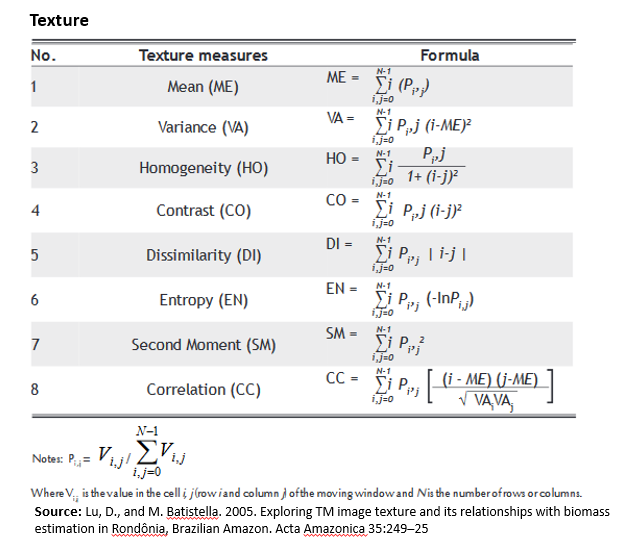
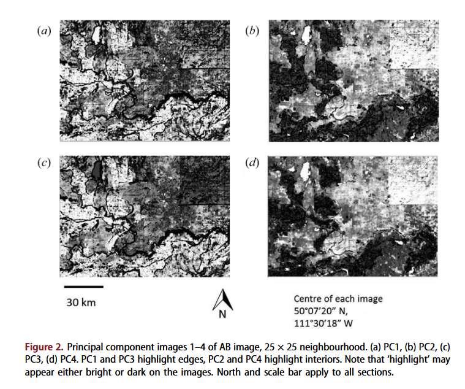

| Correction | purposes /defination | methods | input data | output | Applications |
|---|---|---|---|---|---|
| Geometric Correction | Corrects distortions caused by the sensor or satellites to align the image with the geographic coordinate system, ensuring spatial accuracy. | different transformation types(linear, polynomial, Helmert…) | Pixel coordinates of the original image, GCPs（Ground Control Points, Pixel coordinates of the rectified (gold standard) map | corrected image | The basis for subsequent georectification and orthorectification |
| Atmospheric Correction | Removal of environmental attenuation:Atmospheric scattering and Topographic attenuation | DOS（Dark object subtraction, PIFs (Psuedo-invariant Features), Py6S, FLAASH, ACORN, QUAC, ATCOR Empirical Line Correction | radiance reflected above the surface , Atmospheric attenuation | Top-of-atmosphere reflectance and Surface reflectance | Biophysical parameters required and the use of spectral signatures across time and space. |
| Orthorectification | removing distortions. making the pixels viewed at the nadir (straight down) | Cosine correction, Minnaert correction, Statistical Empirical correction, C Correction (advancing the Cosine) | radiance, Sun's zenith angle, Sun's incidence angle slope angle (from DEM), slope aspect, solar zenith, solar azimuth | geographically aligned and topography removed | Orthorectification Is a subset of georectification, useful for Precise Georeferencing and High-Precision Measurement and Spatial Analysis |
| Radiometric Calibration | Converts the digital value (DN) of an image into a physical sense of radiant brightness or reflectance, eliminating the effects of sensors, light sources, etc. | Lλ = Bias + (Gain * DN) | DN, sensor information, Solar radiation information | Corrected image | Often used as a first step in data pre-processing to provide a basis for subsequent atmospheric corrections, etc. |
3 Corrections and Enhancements
3.1 Summary
The lecture includes two parts: Correcting data and Accessing data. This is preparation work for conducting data research.
3.1.1 Correction
The correction makes the raw remote-sensing data become “Analysis Ready Data”(ARD). In this lecture, we mainly learn four kinds of correction: Geometric Correction, Atmospheric Correction, Orthorectification, and Radiometric Correction. I try to figure out the connection between them to have a better understanding. It seems like the Radiometric correction and atmospheric correction are the most common correction steps in remote sensing data processing, and are usually required for every image. Geometric Correction and Orthorectification are commonly used processing scenarios where spatial aberrations exist or where accurate spatial analysis is required, not every data is needed. The following table will introduce details about different corrections. Regression is important in correction methods.
Surface reflectance is the result of radiative and atmospheric corrections. In practice, we get the reflectance from DN (level 1) through DOS methods. Nowadays there are many ways to get processed data like Landsat8 (level 2-surface reflectance). This data has been atmospherically corrected. Saves a lot of work. But in the future, there will be some chance to handle high-resolution images that have not been processed. It is still important to know how to correct it and how to tackle problems like aberrations. We should download the data that fits our needs. Using Landsat data as an example, the hierarchical structure of Landsat data is Collection→ Level→ Tier. In general, we choose Collection 2 + Level-2 + Tier 1.
3.1.2 Joining the data
In some cases, we need to merge the images from different regions and times to cover the study area. We had better choose the image from the same day or else we need to standardise data. In remote sensing, it is called “Mosaicking”. This involves complex arithmetic processes: histogram matching algorithm feathering and blending. But it is simple in R just needs some time.
m1 <- terra::mosaic(l83, l84, fun="mean")3.1.3 Image Enhancement
We choose the appropriate data, process it, and modify it to generate the desired output. The methods help us change the image and produce the output for our purpose. The methods are as follows.
| Enhancement | purposes /defination | methods | input data | Advantages | Applicable scenarios |
|---|---|---|---|---|---|
| Contrast Enhancement | Improved visualisation of the image by widening the distribution of pixel values. | Minimum- Maximum Percentage Linear and Standard Deviation Piecewise Linear Contrast Stretch | Images with a narrow distributions | Enhance images contrast and details | pre-processing for subsequent classification and visual interpretation |
| Band Ratioing | Using the ratio of reflectance of different bands to highlight specific feature characteristics | division operations (like NDVI, NDBI, tasselled cap etc.) | Multi-spectral imagery | Emphasis on relative differences in expression of feature characteristics | Normalized Burn Ratio, The Normalised Difference Vegetation Index, the Normalized Difference Moisture Index (NDMI) |
| Filtering | Suppressing noise or highlighting local variations through filter operations. | Low pass or low frequency (averages the surrounding pixels)/High pass or high frequency-enhance local variations | Original data | Smooth or sharpen images; extract edge information as required | Feature extraction, target detection |
| PCA | Dimensionality reduction, removal of inter-band correlations, and extraction of most of the information in the image. | In R this is prcomp() from the terra package | Multi-spectral imagery | Extracting the main direction of change reduces the computational burden and noise reduction | Data compression, change detection, feature extraction |
| Texture | measuring the relationships between pixel-to-pixel, quantifying roughness to obtain feature characteristics. | GLCM(Gray Level Co-occurrence Matrix ) second-order texture measures, third-order texture measures | Grey-scale images or single-band data, windows | Characterisation of feature texture, feature classification, target identification | Land cover classification, target detection, environmental monitoring |
| Fusion | Fusion of data from different sensors or different times | Pan-sharpening, Gram-Schmidt, IHS | Multi-temporal, multi-sensor data | enhance the details of the images | High resolution data generate, changes detection, data integration |
3.2 Application
Texture analysis is widely used as an image enhancement technique to improve classification accuracy by providing additional spatial information that spectral bands alone cannot capture.
Lu et al. (2012) improved the identification of the Amazonian tropics by using texture fusion with multi-spectral images. By incorporating GLCM texture measures, classification accuracy improved in distinguishing dense forests from secondary vegetation. This demonstrates how texture-based enhancement refines image details and supports better feature extraction. However, some texture measure has high correlations with each other, leading to increased redundant information and possibly affecting classification stability. Although the author finally chose two measures, sifting through all the variables still requires a lot of computation.
Which texture-measures combination from GLCM is most suitable for landscape identification? Hall-Beyer (2017a) examines scenarios such as agricultural landscapes. Trying different texture measures in the identification of natural landscapes. Combining texture with the PCA method can filter the most representative texture features and improve computational efficiency. Certain texture features, such as Contrast and Correlation, are particularly effective in capturing spatial variations, while others, like Entropy, provide additional complexity. Different landscapes require different texture measures, as structural complexity varies across environments.

Hall-Beyer (2017a) PCA to help with filtering texture measures. Reduced workload in identifying natural landscapes for future research. However, this research only discusses the different groups of texture measures that will bring different influences to the results. It does not mention the influences of resolution and window sizes. Smaller windows are more effective for detecting fine-scale features, while larger windows enhance broader landscape classification, making window selection an important factor in image enhancement. So, in the future, research can focus on the different window sizes for different-resolution images. This will improve the applicability of the texture method at different spatial scales. Now, texture is usually used for natural landscapes like forests. But Ent can detect unnatural edges well. So texture is also important for urban land use identification. For example, Fatemeh Tabib Mahmoudi, Arabsaeedi, and Alavipanah (2019) introduced entropy, contrast, correlation and mean for urban object recognition. In the future there could be more research on applying texture in complex scenarios like cities. Future research should explore integrating texture-based enhancement with other image correction techniques, such as radiometric correction, to improve classification robustness across varying imaging conditions.

3.3 Reflection
This week we learned about Correction, Mosaicking, and image enhancement. We usually comprehend different methods and concepts separately during the learning process. (But the content this week is still hard for me.) In practice, for different bands and spatial resolutions, the effects of the different methods are also different, so it is necessary to combine various methods to realise the purpose of the study. For example, when doing principal component analysis (PCA) on spectral data, the subsequent eigenchannels usually represent indexes like NDVI (vegetation) mentioned in the band ratio.(Hall-Beyer 2017c) This suggests that there may be a relationship of complementarity between the different approaches. In addition, in order to get more clearer images and results, researchers often combine different sensor data and methods of analysis.
The enhancement method—Texture, currently applies to natural landscape identification such as forests. But I think it can also used in small-scale urban identification because Ent is sensitive to unnatural edges and can be used to identify artificial landscapes. What’s more, compared with popular Spectroscopic methods, Texture methods (e.g. GLCM) focus on the spatial pattern of the image and may reduce the band radiometric errors due to temperature variation caused by the city heat island effect. However, texture can only be used for enlarged objects due to its large computation and the edges of the city are especially complex, which limits its ability to complement other methods in many situations. I believe addressing this limitation could be an important direction for future research, particularly through deep learning-based feature extraction. Automated texture analysis could reduce computational demands and improve classification efficiency, making it more applicable to urban studies. In specific applications, texture features might be beneficial for urban planning, by accurately identifying traffic-congested road sections based on density variations.